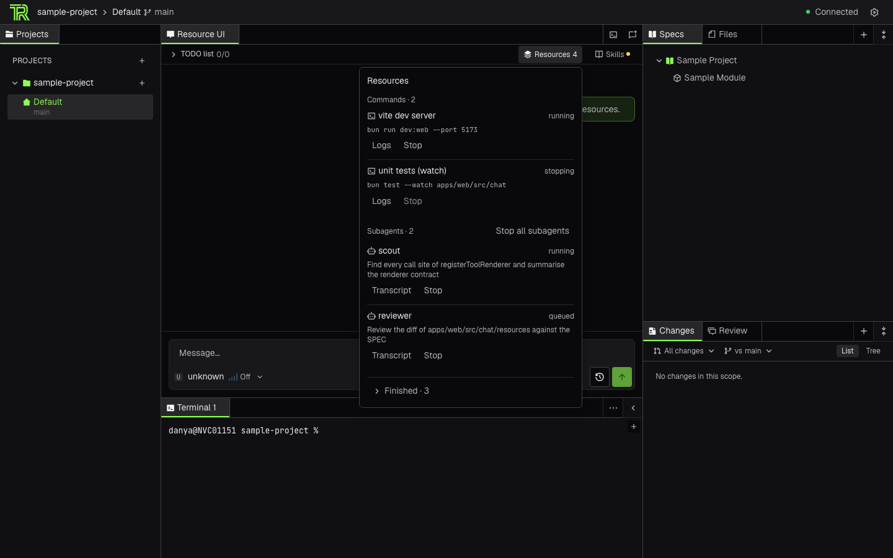
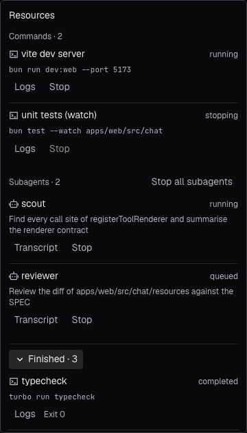

How should background work look in a ThinkRail chat?
“Resources” are the things an agent starts that outlive a tool call: background commands and subagents. Today they live in a header popover with three-line rows and lowercase status words. These mockups explore six placements for the same data, each rendered with the real ThinkRail palette, type scale and spacing — switch theme and scenario in the sidebar; everything below is live (hover rows for actions, click triggers, stop things).
Each direction lists what it borrows from competitors, its trade-offs, and whether it fits the current contracts (SessionResources, backgroundCommand.output, subagent.getTranscript) or needs a wire change. Fields marked proposed — live activity, needs-input, model/usage, nesting — do not exist on the wire yet.
Where this landed: after review, the header trigger and row grammar of A, the composer dock of B and the inspector of F were combined into G, shown first. A–F stay below as the explored alternatives and as the component sources. A second page, G across the workbench, applies the same vocabulary to chat tabs, rail rows, the composer tray, the closed-chat menu and a workspace-scoped inspector.
real tokens4 themes5 scenarioslive timerskeyboard: Esc closes
0 Baseline — what ships today header popover
Captured from the running app with a populated snapshot (dark theme). Functional and honest about authority, but every row is a three-line stack with a lowercase status word, no elapsed time, no activity, and ghost text buttons that read as content.

Popover over the chat tab · Resources 4 trigger

Finished expanded · status is a word, exit code is text
G Combined — trigger · dock · inspector recommendedA + B + Ffits current contracts
Three surfaces, one roster, one row grammar. The header trigger (A) is the always-present control: count, breathing dot while anything is live, amber marker when a child needs you. The composer dock (B) is the ambient view — live rows only, Stop on hover, Claude Code's footer panel in spirit. The inspector (F) is the detail view: it slides over the message list (the composer stays usable) with the full roster on the left and the selected item's log tail or transcript on the right. Every way in — trigger, dock row, the “N still running” chip, Inspect on an Agent or background-command card — opens the same inspector at that item; while it is open the dock yields so the live list never renders twice.
1 At rest — trigger + dock + chip; tool cards carry Inspect
Try:click the trigger, a dock row, the “N still running” chip, or Inspect on a card → inspector opens at that itemhover a dock row → StopScenario “Needs you” → the amber row stays pinned even when the dock is collapsedScenario “Idle” → trigger reads 0, chip gone; only the dismissible failed row is left in the dock — × it and the dock disappears
2 Inspector open — opened from the dock on “scout”
Try:click rows on the left or press ↑↓Stop on the detail header; Stop-all (■) in the list header → confirmation names the count× / scrim / Esc → back to the chat, the dock returnsScenario “Stale” → — on the trigger, controls disabled, banner in the list
A Roster popover trigger + row grammar → reused in Gfits current contracts
Same placement, new content: one unified list sorted by urgency (Needs you → Working → Stopping → Queued), each row a single sentence glyph · name · activity · elapsed, actions on hover/focus, Finished folded with a count. The trigger breathes while anything is live and carries an amber marker when a child needs you.
Try:hover a row → Logs/Transcript + Stopclick Stop on “scout” → Stopped (neutral)Stop all → confirmation names the countFinished ▸ toggleScenario “Stale” → controls disabled, trigger shows —
B Composer dock dock → reused in Gfits current contracts
A borderless strip docked above the composer lists only live work (plus a recently-failed row until dismissed). It auto-collapses to one summary line past four rows and vanishes when idle. The header trigger still opens the full roster with Finished — the dock is the live view, the popover is the history.
Try:hover a dock row → Stop“hide” collapses to the summary line× dismisses the failed rowScenario “Fan-out” → auto-collapsed summaryScenario “Idle” → only a dismissible failed row remains; × it and the dock is gone
C Activity side tool workbench paneneeds new wire reads
Resources become a singleton side tool next to Specs/Files (movable like every other tool). Room for a second line per row (task · model · usage), a two-line output tail under live commands (Codex /ps), and a scope switch from “This chat” to “Workspace” that groups other chats' work. The chat header keeps a small “Activity · N” jump button.
Try:scope pill → Workspace groups another chat's workhover rows → actionsFinished ▸
D Inline receipts the transcript is the roster
No separate list while reading: a spawn batch gets one anchored row at its spawn point (“Kicked off N subagents · 1 working · Σ tokens — Open resources”) with the live children beneath it; a background command becomes a card with a live tail. A floating “N working” pill keeps the count visible when those rows scroll away; the popover holds Finished.
Under the chat header, one pill per live resource next to a main pill. Clicking a pill swaps the chat body for that child's log or transcript in place (Stop + Back to chat); the bar shows at most five and folds the rest. Finished lives behind a trailing pill.
Try:click “vite dev server” or “scout” pills“main” returns to the chatScenario “Fan-out” → +N more
F Inspector sheet inspector → reused in Gfits current contracts
The trigger opens a sheet inside the chat column instead of a popover: the roster on the left (Needs you / Active / Finished), the selected item's detail on the right — metadata, live log tail or transcript preview, Stop. Logs and transcripts stop being separate dialogs; ↑↓ moves between items, Esc closes.
Try:click rows on the leftStop on the detail header× or Esc closes
Header trigger states shared by A · B · D · F
The trigger is the only ambient signal in the popover-based directions, so it has to carry three facts honestly: how many things are live, whether any needs you, and whether the number can be trusted.
Row vocabulary one grammar for every direction
A resource row reads as a sentence. The kind glyph carries a status dot; the state is always glyph + colour + word; time is right-aligned and tabular; actions appear on hover/focus and replace the state text so the row never grows.
Live command
Stopping
Subagent working (proposed activity line)
Subagent queued
Needs you (proposed)
Finished · exit 0
Failed · exit 1
Stopped by user (neutral)
Nested child (proposed parentId)
Competitor references screenshots
Three shapes worth keeping in view while deciding (linked to their sources — the screenshots are theirs, not ours). Full notes in COMPETITIVE-ANALYSIS.md.
Cursor — the “9 Working” panel above the composer (glyph · title · inline summary, Stop All, nested child): forum report with screenshot.
Amp — subagents as inline transcript rows with outcome stats (+/−/~): “Agents for the Agent”.
Antigravity CLI — the /agents panel (grouped subagents, K kills, Enter opens detail): docs.